CRUCES HISTORICOS
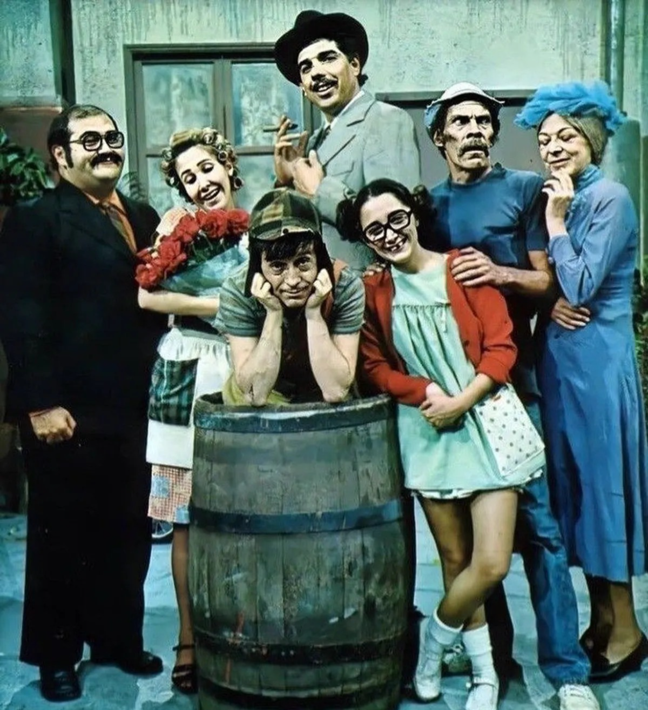
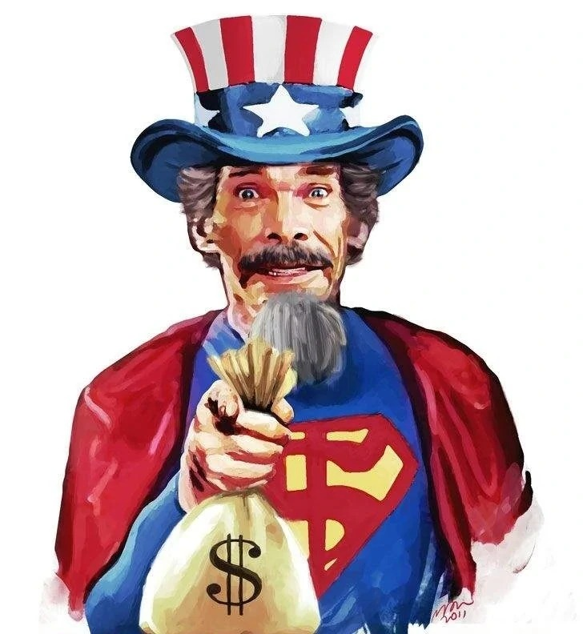
SÚPER SAM
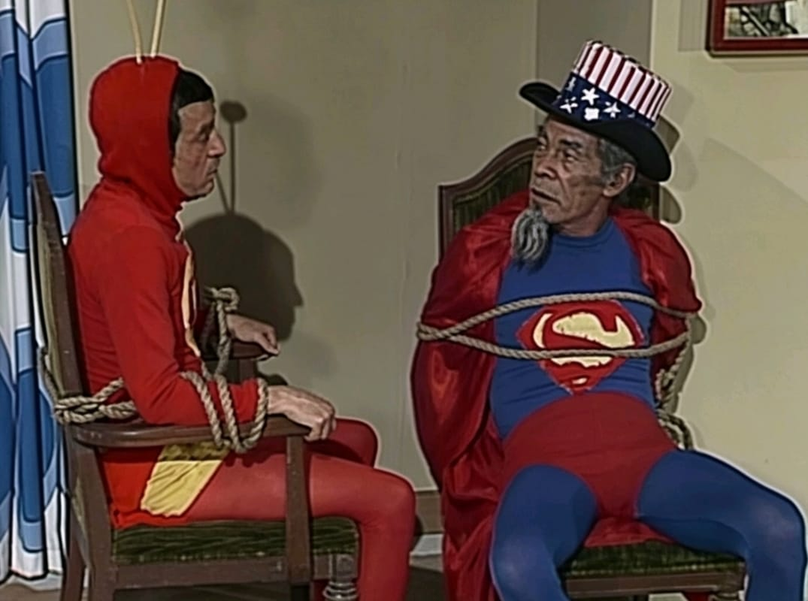
Este es el choque de dos filosofías de heroísmo totalmente opuestas. Súper Sam, un héroe estadounidense que viste de azul y blanco, suele aparecer en el Viejo Oeste portando una bolsa de dólares que utiliza como arma. Mientras el Chapulín representa la nobleza y la astucia, Súper Sam representa el poder del dinero y el pragmatismo. Sus misiones suelen estar llenas de roces diplomáticos y competencia, ya que Súper Sam desprecia la supuesta falta de fuerza del Chapulín, mientras que el héroe colorado se burla del inglés masticado y la falta de "corazón" de su contraparte.
EL CHAVO DEL OCHO
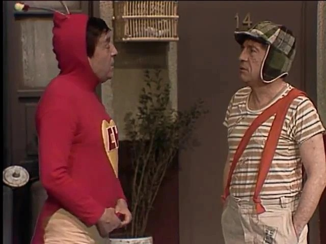
Este encuentro es uno de los momentos más memorables de la televisión, ya que rompe la barrera entre la fantasía y la realidad de la vecindad. En estos cruces, el Chapulín acude al llamado de auxilio de los niños o de Don Ramón, interactuando con personajes que, en teoría, lo conocen como un programa de televisión. Es fascinante ver cómo el Chapulín debe adaptar su heroísmo a los problemas cotidianos de una vecindad pobre, enfrentándose a la lógica infantil del Chavo, quien suele recibir al héroe con más asombro que respeto.
EL CHÓMPIRAS
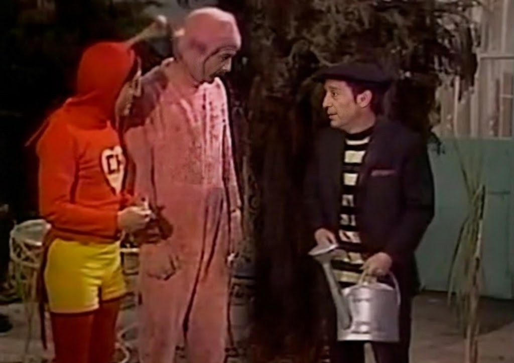
Cuando el Chapulín se cruza con este descuidado ladrón de la banda de "Los Caquitos", la misión se convierte en un ejercicio de paciencia. El Chómpiras representa al criminal inofensivo y despistado que el Chapulín suele capturar casi por accidente. En estos encuentros, la torpeza del héroe choca con la ingenuidad del delincuente, generando situaciones donde el Chapulín intenta dar lecciones de moral a alguien que está más preocupado por no recibir un golpe de su compañero que por cometer un gran robo.
EL DOCTOR CHAPATÍN
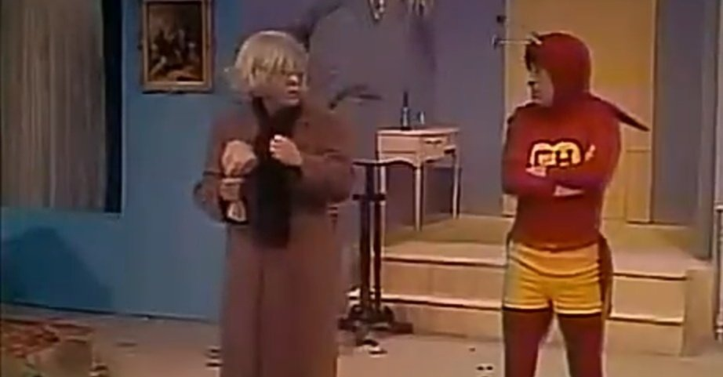
Este es un cruce lleno de sarcasmo y humor ácido, ya que el Dr. Chapatín es un anciano de carácter difícil que no tiene mucha paciencia para los protocolos heroicos. En sus encuentros, el Chapulín suele intentar salvar al doctor de algún peligro o enfermedad, mientras que el anciano responde con golpes de su bolsita de papel o comentarios hirientes sobre la apariencia del héroe. Es un contraste de generaciones donde la energía del caballero rojo se estrella contra la terquedad de un médico que parece haber visto demasiado en la vida.
EL MEJOR...
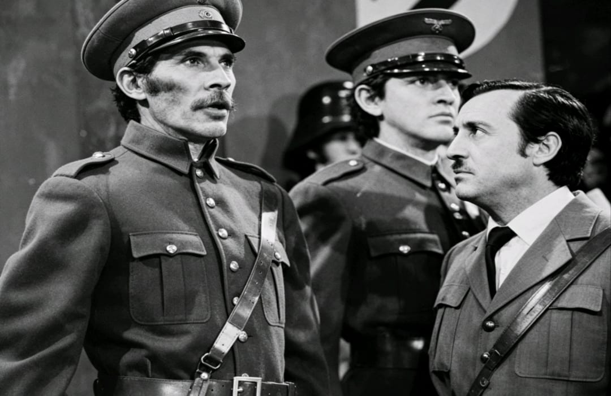
EL ENCUENTRO CON ADOLF HITLER
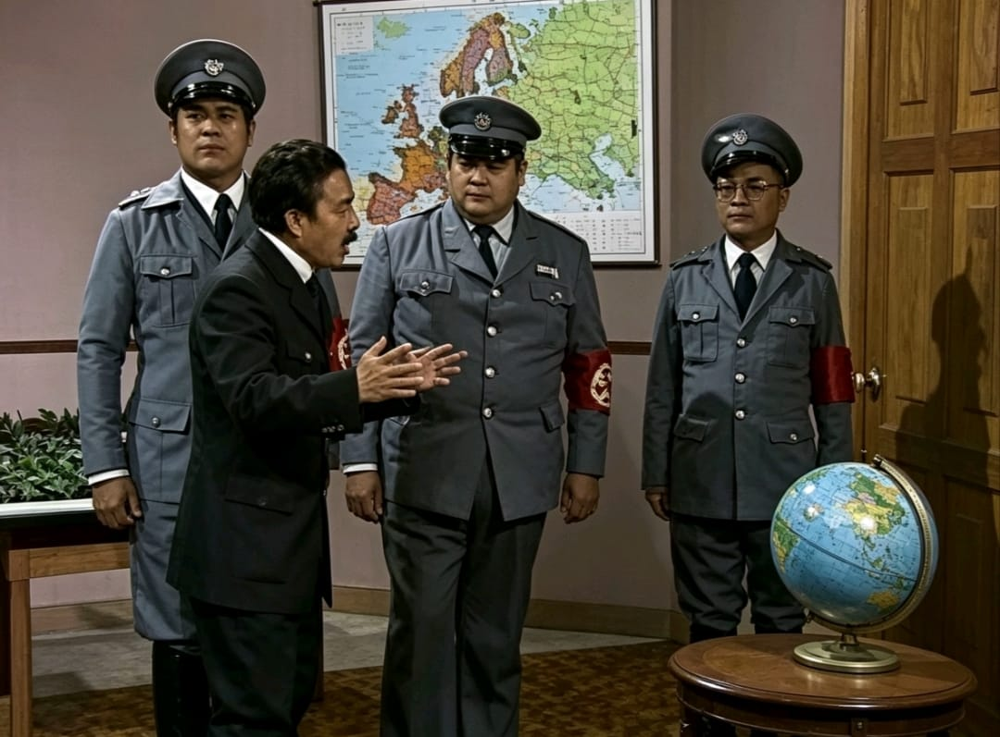
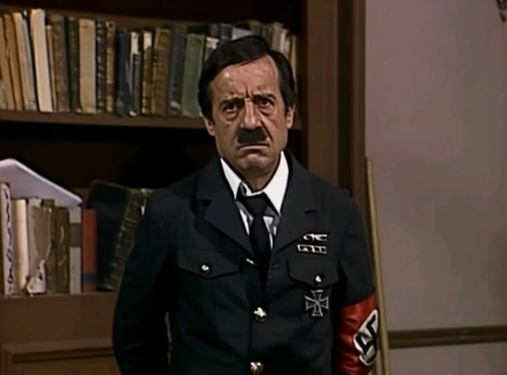
En este episodio de corte histórico y satírico, el Chapulín Colorado se desplaza temporalmente a la Alemania de la Segunda Guerra Mundial, específicamente al búnker del dictador. La misión no se centra en un combate tradicional, sino en la desmitificación del villano a través del ridículo. El encuentro es un choque de opuestos absolutos: la figura del dictador, que representa la tiranía y la prepotencia, se ve eclipsada por la presencia absurda y noble del Chapulín, quien termina desarmando la seriedad del régimen nazi con sus constantes tropiezos y malentendidos lingüísticos.
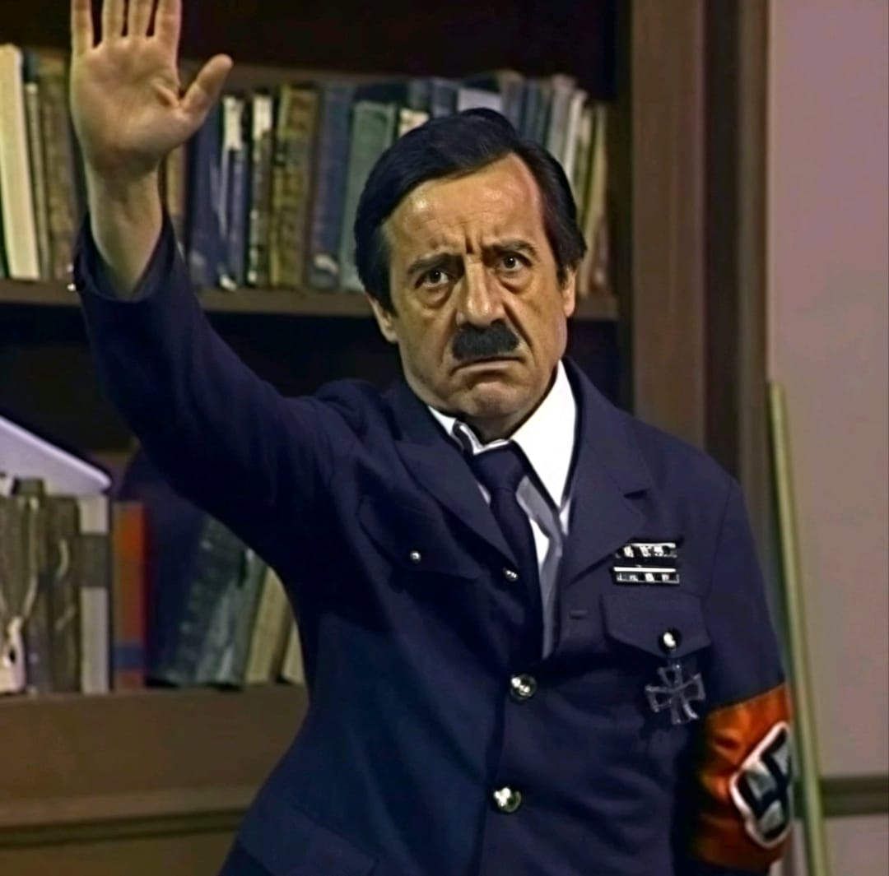
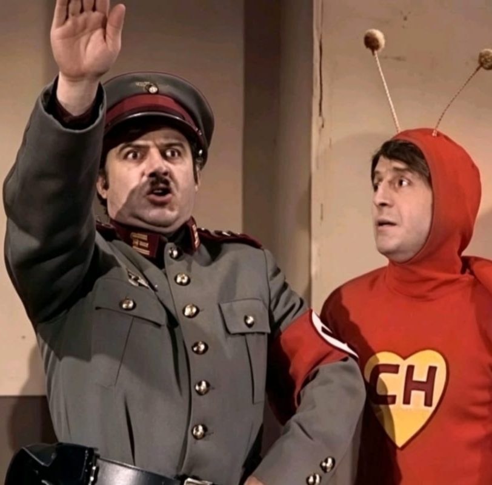
El clímax de la intervención ocurre cuando el Chapulín utiliza su astucia para ridiculizar la figura del "Führer", demostrando que el miedo que el dictador impone es frágil ante la burla y la bondad. A través de enredos con los oficiales y situaciones de comedia física dentro del cuartel, el episodio lanza un mensaje poderoso: el mal puede ser imponente, pero pierde su poder cuando se le quita la solemnidad. Es un cierre de misión histórico donde el caballero rojo no derrota a un ejército con fuerza, sino que vence a la ideología del odio convirtiéndola en el remate de un chiste.